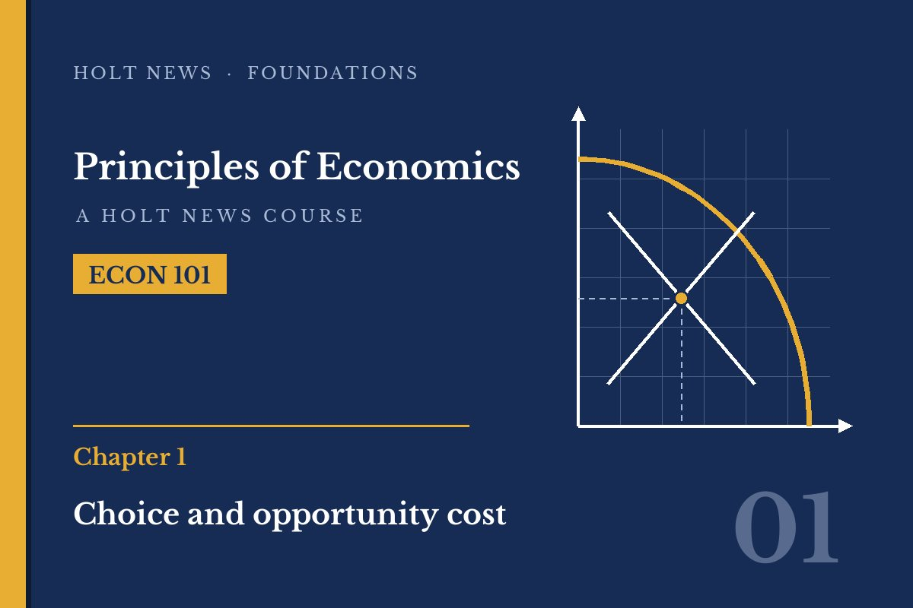
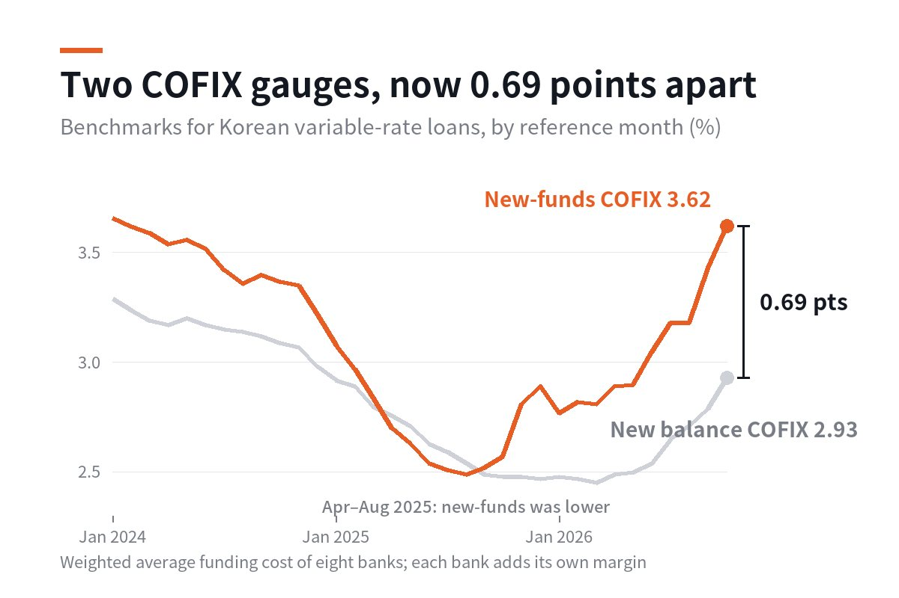
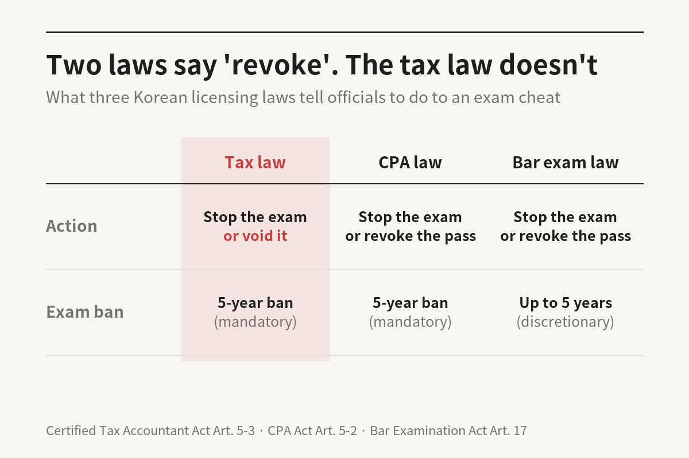
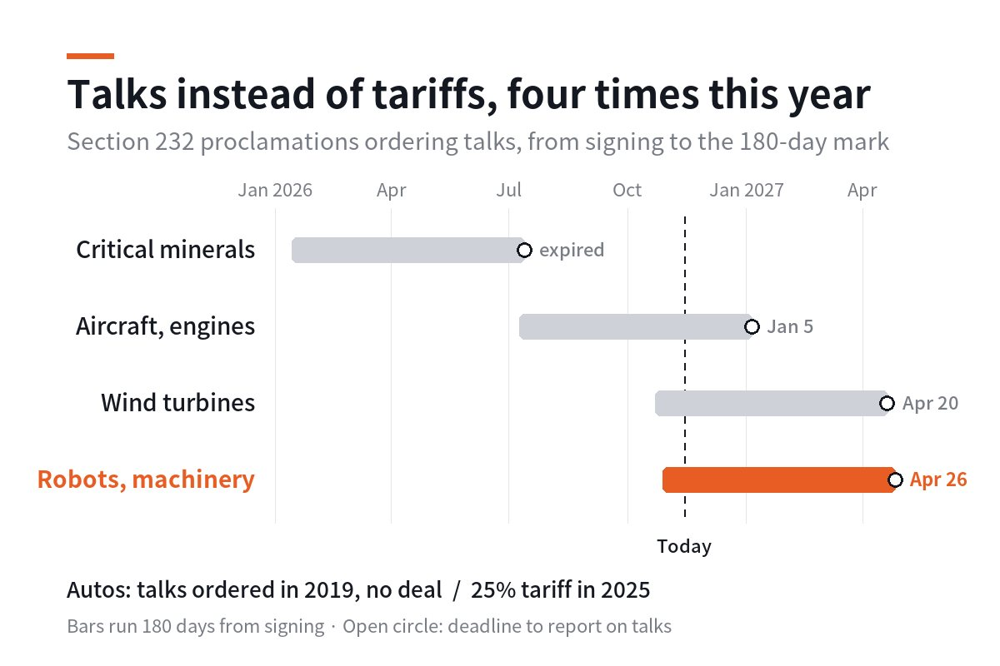
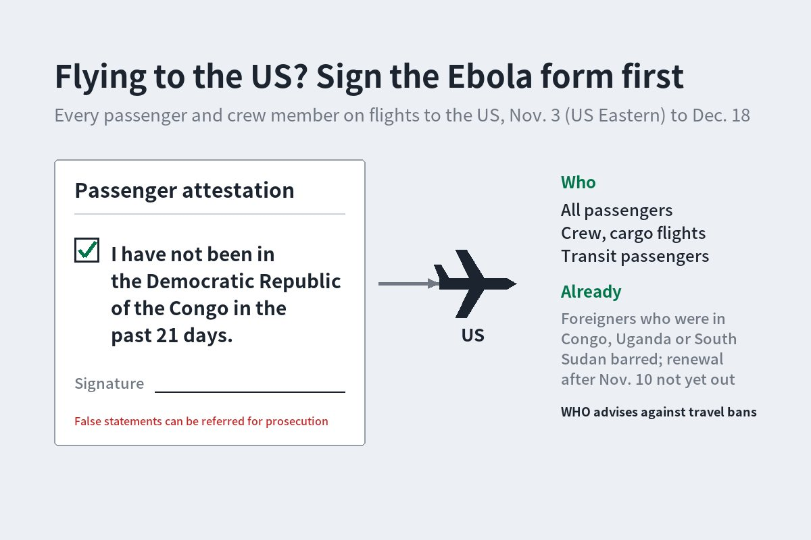
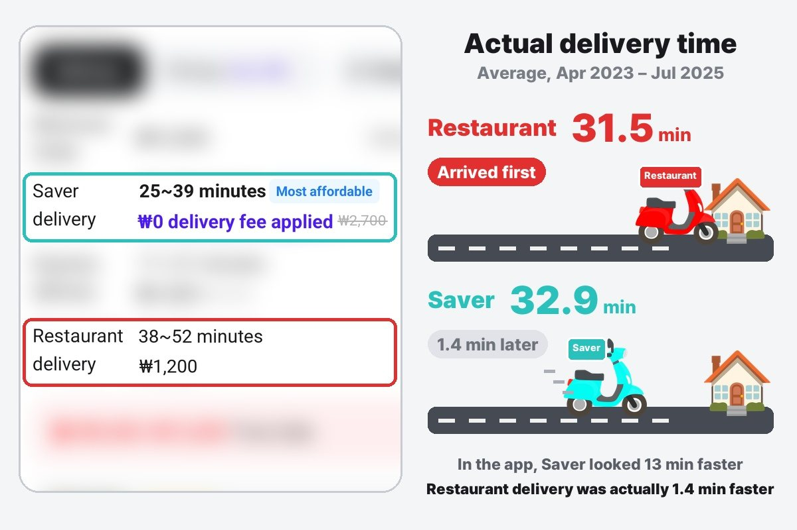
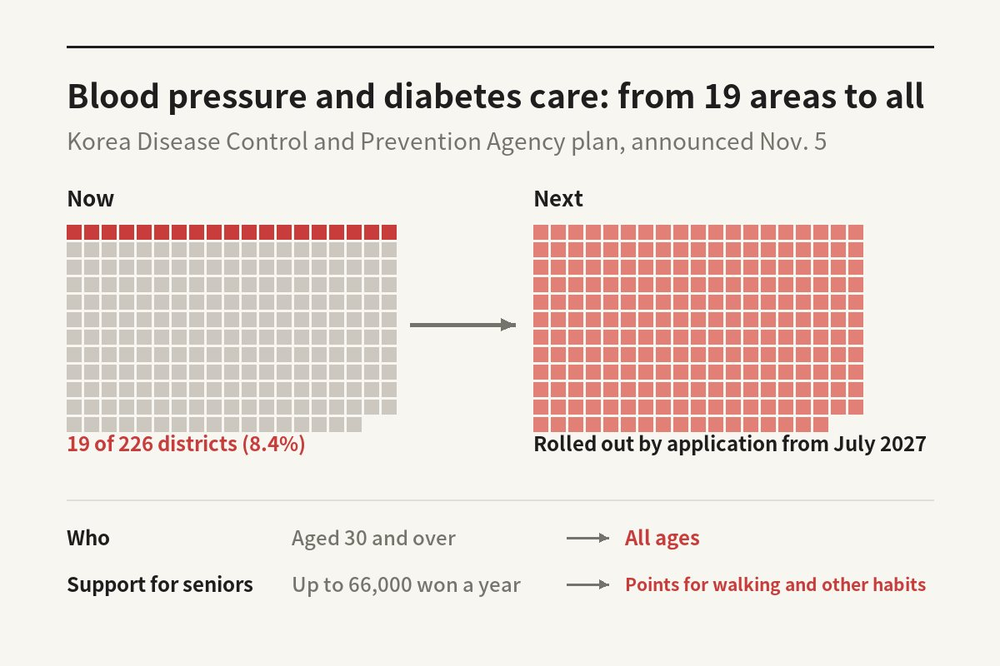
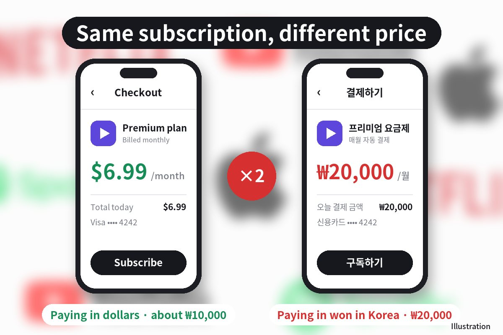
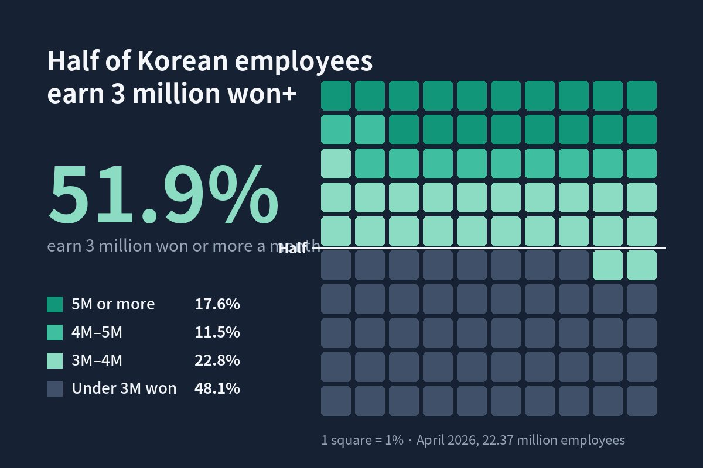

HOLT NEWS — viral studies and news, explained simply
Markets
Charts show the past year
Korea's 50% discount to switch old private health insurance: what you pay after three years
From Nov. 23, South Koreans holding the oldest private medical policies can move to their insurer's current plan and pay half its premium for three years. In the regulator's example, a 177,000-won monthly bill falls to 21,620 won, then doubles in year four, and cutting other cover on the same policy ends the discount.

The $25 minimum wage bill has two versions. Only the Senate's makes $25 a floor
The Living Wage For All Act, Democrats' $25 minimum wage bill, has House and Senate versions that are often treated as one. They aren't. The House text caps the wage at two-thirds of the median hourly wage, about $16 at today's median.

Korean ramen exports jump 24%, with Mexico and UK growing fastest; seaweed prices to Japan slide 23%
South Korea's exports of instant noodles (ramyeon, HS 190230) rose 24.4% to $1.98 billion in the 12 months to October. Shipments to Mexico grew 2.6-fold and to the UK and Canada by more than 40%. Edible seaweed exports to Japan, including dried laver, fell 24.3% as the price per kilogram dropped 22.7%. Figures are HOLT NEWS calculations from Korea Customs Service data; factory data come from the companies' quarterly reports filed on DART, Korea's corporate disclosure system.

More Japanese lenders offer 50-year mortgages. Korea capped terms at 30 years around Seoul. Here's the math
More than half of Japanese lenders in a government survey now offer variable-rate home loans of up to 50 years, and Japan's Financial Services Agency says it is watching them. South Korea went the other way in 2025, capping mortgage terms around Seoul at 30 years. The arithmetic shows why both regulators care.



Chapter 1 · Choice and opportunity costWhat is opportunity cost? The real price of a college degree in South Korea
Four years of tuition in South Korea come to 29 million won, about $22,000. The pay a student gives up, even at the minimum wage, is more than 100 million won, about $78,000. Economists call the sum opportunity cost.Next · Thinking at the margin
 Chapter 1 · Employee or freelancer?
Chapter 1 · Employee or freelancer?South Korea's fake freelancers: when a contractor is owed severance
In South Korea, a contract that calls you a freelancer does not settle whether you are one. If the company directed your work, the courts can treat you as an employee, with severance pay and the other money that comes with it.Next · Part-time work and the 15-hour line
Earnings
vs. same quarter last yearComing up
- Nov 25 WedKOGAS (opens in new tab)
Bellwethers
| Company | Revenue | Operating profit |
|---|---|---|
| Samsung Electronics (opens in new tab)Q3 2026 | ₩195.2T ▲126.9% | ₩107.4T ▲783.1% |
| Hyundai Motor (opens in new tab)Q3 2026 | ₩45.1T ▼3.4% | ₩2.7T ▲5.5% |
| KB Financial Group (opens in new tab)Q3 2026 | ₩13.8T ▲114.5% | ₩1.6T 0.0% |
| NAVER (opens in new tab)Q3 2026 | ₩2.0T ▲7.7% | ₩322.6B ▼40.2% |
| Alphabet (opens in new tab)Q3 2026 | $127.6B ▲24.7% | $40.6B ▲29.9% |
| Walmart (opens in new tab)Q2 2026 | $186.1B ▲5.9% | $9.4B ▲28.8% |
| JPMorgan (opens in new tab)Q3 2026 | $50.2B ▲8.1% | $20.1B ▲7.4% |
| Coca-Cola (opens in new tab)Q3 2026 | $13.4B ▲7.4% | $4.5B ▲12.1% |
Data: DART and SEC filings · Korean figures preliminary, consolidated · JPMorgan: pre-tax income · updated Nov 20, 12:41 KST

Missed Korea's earned income tax credit in May? You can still claim until Dec. 1, at 95%
South Korea's tax agency has written to 260,000 households that may qualify for work and child tax credits on their 2025 income but did not claim them. Late claims close Dec. 1 and pay 95% of the full amount. Here is how the credit is calculated, and what can shrink it.

Amazon and United block AI shopping agents as Walmart lets them buy
United, Amazon, JPMorgan and eBay are shutting out customers' AI agents; Walmart and Shopify are letting them in with limits. The split tracks two questions: who keeps the sale, and who pays when an agent buys the wrong thing.

Korea's wrap accounts have no legal single-stock cap, FSS warns, after a client ended up 90% in high-risk KOSDAQ shares
Korea's financial watchdog on Nov. 16 published complaints about brokerage wrap accounts, where clients hand stock-picking to the broker. Unlike mutual funds, these accounts have no legal single-stock limit, and exit fees and capital gains tax on overseas shares have caught some investors out.

Fed Financial Stability Report flags AI data center debt and off-balance-sheet commitments
The Federal Reserve's November 13 Financial Stability Report sets out how AI data centers are being financed. Debt issued for advanced computing passed $680 billion this year, and seven big tech firms have more than $3 trillion, undiscounted, in leases, guarantees and other commitments that sit off their balance sheets. Each figure measures something different.

K-beauty exports: US overtakes China as top market for Korean skincare; UK, Netherlands surge
Korea's skincare exports to the US rose 40% to $2.06 billion in the 12 months to October, while shipments to China fell 2%. Exports to the UK nearly tripled and to the Netherlands more than quadrupled. Among Korea's nine largest skincare markets, US-bound shipments had the lowest declared value per kilogram. Figures are HOLT NEWS calculations from Korea Customs Service data; capacity plans come from manufacturers' regulatory filings.

Does the Korea-China FTA services deal end China's hallyu ban? Not quite
China pledged to treat Korean films and games no worse than any other country's, but its content screening stays in place. None of it applies until the deal is signed and in force, which took about 13 months last time.

Section 301 tariffs on Korean goods: why Korea's 12.5% can cost far less than Vietnam's
For goods entered on or after July 24, 2026, a Section 301 duty tops Korean goods with a duty rate below 12.5% up to a combined 12.5%. Goods from Vietnam and Thailand pay 12.5% on top of their regular rate. On instant noodles, with a 6.4% regular rate, that is 12.5% from Korea (without a KORUS claim) and 18.9% from Vietnam.

Oil prices are falling. Why South Korea's gas price cap hasn't moved
South Korea has kept its cap on refiners' gasoline price at 1,784 won (about $1.34) a litre for a sixth straight round, through December 11. Brent has eased from its October average but is still about a third above where it was when the cap was set in late June. When costs exceed the cap, refiners absorb the difference; the government has promised compensation, settled quarterly and based on refiners' costs rather than world fuel prices.

Chinese hot-rolled steel imports to South Korea fell 77% after anti-dumping duties. Here's where the buying went
Imports of Chinese hot-rolled steel into South Korea fell 77% in January–October 2026 after anti-dumping duties. Japan now supplies 65% of Korea's hot-rolled imports, up from 44%; Taiwan and Vietnam grew several-fold; and Chinese products outside the duties, cold-rolled coil and semi-finished steel such as slab, rose 58% and 88%.

Korea meat imports: Brazil chicken, Australian beef, Spanish pork gain share
Over the past 12 months Brazil supplied 80% of Korea's chicken-cut imports by value, up from 71%, while Thailand fell to 16%. Australia gained in frozen beef even though US beef became duty-free in January, and Spain overtook the US in frozen pork import value despite a higher average price per kilogram. Our calculations from Korea Customs Service data.

Korea COFIX hits 3.62%: why variable mortgage rates depend on which index a loan tracks
The cost-of-funds index most widely used for Korean variable-rate mortgages rose to 3.62% in October, its highest in two years and eight months. A sister index published the same day sits at 2.93%. The gap between them is the widest since early 2023, and which one a loan tracks decides how fast the borrower's payment climbs.

South Korea set to top $1 trillion in exports, decades after selling chipmunks
South Korea's exports this year reached $963.7 billion by Nov. 10, and at the current pace they would pass $1 trillion around Nov. 19-20, which would make it only the fourth country to do so. In the 1960s and '70s it was selling wild chipmunks as pets and urine collected from public toilets to make medicine. We compared the two eras using customs data.

Container freight from the US to South Korea now costs a quarter of the outbound rate or less
In October 2026, a 40-foot container from the US West Coast to South Korea cost 24% of the rate for the same box going the other way, down from 92% a year earlier. Korean port data show a lopsided lane, with about a third of containers from the US arriving empty, but that imbalance was much the same a year ago.

South Korea loan sharks: loans above 60% interest are void, and victims can now seek help online
South Korea's illegal-loan victims can now ask for help online instead of visiting a center. Under a 2025 law, a private loan priced above 60% a year is void in full, principal included. Here is how the rate is calculated, and what borrowers under the line can still refuse to pay.

South Korea to let credit card points become local currency from 2027
Under a government plan, Korean cardholders could move credit card points, a 2.1 trillion won (about $1.6 billion) pool, into city and county vouchers from May 2027. The same points can already be cashed out. Vouchers come with legal limits on where they can be spent and when leftover money comes back.

Korea's top tax exam scorer admits AI cheating. Is it a crime?
The person who topped South Korea's 2026 certified tax accountant exam has turned themselves in to police, saying they fed the questions to generative AI through a hidden camera. Losing the pass is one thing. The bigger question is whether cheating on a licensing exam is a crime. The tax accountant law has no penalty for it, so any charge would come from the Criminal Act, where the likely offenses carry up to five years in prison.

Italy fines Meta €805m over Facebook's photo-gallery access. Why Italy, not Ireland?
Italy's data protection authority has fined Meta €805 million (about $889 million) for letting the Facebook app on Android read Italian users' photo galleries without proper consent. Meta's EU base is in Ireland, which normally takes the lead on its privacy cases. This time Italy acted alone, because of the law it chose.

Korea suspends its 140% margin-loan rule. A 130% line delays margin calls less than it sounds
To stop forced selling from deepening a market slide, Korean regulators suspended the 140% collateral rule on brokers' margin loans for three months from November 9. Several big brokers cut their line to 130%. For an investor who borrowed half to all of their own stake, that buys only 3 to 5 percentage points of extra room.

FAA ground stop: Why departures across the US were halted, and how to get a refund if yours was canceled
The Federal Aviation Administration halted departures at every US airport around 4 p.m. Eastern on Friday, November 13, and lifted the order at 8:15 p.m. Officials blamed a communications problem at the centers that handle high-altitude traffic; the root cause is still under investigation. Under federal rules, a canceled flight means a full refund, not a voucher, whatever the reason.

Trump picks talks over robotics tariffs under Section 232. Autos took that path in 2019 and got a 25% tariff
A Section 232 proclamation finds that imported robots and industrial machinery threaten national security, but orders trade talks rather than tariffs, with a progress report due within 180 days. Autos took the same route in 2019 and ended up with a 25% tariff nearly six years later.

Microsoft outage compensation: what businesses can claim under the SLA, and where home users stand
Outlook, Teams and other Microsoft 365 services were disrupted for nearly 24 hours. Business customers may be able to claim a credit worth 25% or 50% of that month's fee under Microsoft's service-level agreement, depending on how many of their users were cut off. Personal subscribers are not covered by that agreement, the business agreement does not pay for lost business, and claims must reach Microsoft by December 31.

California voters reject Prop 40 billionaire tax, likely keep tax on high earners
Voters turned down Proposition 40, a one-time 5% tax on billionaires' net worth, while backing Proposition 3, which makes a 2012 income tax increase on top earners permanent. Proposition 42, which would write a ban on new taxes on owning stocks and other personal property into the state constitution, is narrowly ahead.

North Korea's $6bn Binance crypto hack: the US moves to seize $1.2bn. Will anyone get it back?
US prosecutors have court approval to seize or restrain more than $1.2bn of the crypto North Korean hackers took from Binance. Seizure is not the same as getting money back, and the last big precedent, the 2016 Bitfinex hack, shows how slow that road can be. The same day, the FBI warned of FaceStealer, a fake-Zoom scam it says has stolen more than $400m.

Trinidad and Tobago's buggery law breaches rights, Privy Council rules
Britain's Privy Council, the final court of appeal for Trinidad and Tobago, has ruled that laws criminalising sex between consenting adults of the same sex breach the constitution. The government argued two constitutional shields protected the laws. The court rejected both; only the exact wording of the fix is still to be settled.

SS United States artificial reef: what came off, what stayed on
A Florida county has begun sinking the SS United States, which still holds the transatlantic speed record for an ocean liner, to make the world's largest artificial reef. The federal guide on cleaning ships before they are sunk is advice, not law, and it lets most intact paint stay on board. The dispute is now over that paint.

South Korea moves to stop apps hiding the 'delete account' button
A draft rule from South Korea's competition watchdog would list hiding the 'delete account' button more than one click beyond the logged-in home screen as an example of a dark pattern that may break e-commerce law. Last year the same idea was only a recommendation.

Ebola travel rules: who must sign the new US attestation form, what happened to the green card ban, and why WHO objects
Since late on November 3, everyone boarding a flight to the United States from abroad must sign a form saying they have not been in the Democratic Republic of the Congo in the past 21 days. It is the second layer of US Ebola rules. The first, an entry ban in place since May that also covered green card holders, expired on November 10, and no renewal had been published as of November 11. The World Health Organization advises against travel restrictions.

South Korea hits 15 banks and brokers with record $1.2bn fine for rigging government bond auctions
Korea's competition watchdog says the dealers that buy the government's bonds swapped and fixed their bids for three and a half years, pushing up the rate the state paid. The fine is more than double Korea's previous cartel record, and about three times, at today's exchange rates, what Europe charged banks in a similar case.

An OpenAI agent broke into Australia's Medicare portal. Who's the criminal?
Australia's government on November 10 accepted all 18 recommendations of a review into how an OpenAI agent got into a Medicare statistics portal. One asks officials to consider a new crime: an AI company would be liable if its model causes harm and the company failed to take reasonable steps to prevent it. Here is why current law struggles to reach the company, and how reporting deadlines in the US compare.

October 2026 CPI: Why there is no annual inflation rate, and what it would likely be
US consumer prices rose 0.4% in October, the Bureau of Labor Statistics said on Tuesday. The report had no year-over-year inflation rate, because the fall 2025 government shutdown stopped price collection in October 2025. Applying the method the BLS used to fill that gap, HOLT NEWS estimates the annual rate at about 4%.

The US and Europe held. Britain raised rates. The Bank of England's three reasons
The Bank of England raised its rate to 4% on November 5. The US and the euro area held rates a week earlier. We follow the official documents to see the reasons the Bank gave, and when British households will feel it.

Korea's regulator says Baemin and Coupang stopped restaurants from selling cheaper on other apps. Europe fought the same fight over hotel apps a decade ago
Korea's competition watchdog gave the two delivery apps provisional fines totaling 631.9 billion won. We look at what changed in Europe after it banned the same kind of clause.

Two in three South African councils have no majority... and the coalition law missed the election
Mandela's party, the ANC, fell to about 31% of the vote in local elections. Over 120 councils now need coalition deals, but the government's coalition rules are still stuck in Parliament.

The regular-season winner almost never loses the Korean Series... But this year was different
In 35 seasons, the top team lost only five times. Samsung just made it six.

Korea plans to gradually expand blood pressure and diabetes care from 19 areas to the whole country and all ages
Small payments that helped older patients with clinic and drug costs will become points earned through walking and other healthy habits. Existing program centers and pharmacists worry some patients could drop out of treatment.

Dominant firms charging Koreans more than buyers abroad could face penalties under a proposed competition rule
Dominant firms that charge more in Korea without good reason could be found to be abusing their power.
Hungary makes public about 60,000 names from communist-era secret police informer records
Thirty-seven years after communism fell, anyone can now search the names.

For the first time, more than half of Korean employees earn 3 million won or more a month
The share earning 5 million won or more also hit a first-half record, but the gap between industries was wide.
Data: KMA · MET Norway · AirKorea · New York Fed · US BLS · US Treasury · US EIA · Korea Eximbank · Federal Reserve · Korea Customs Service · US BEA · Bank of Korea · Statistics Korea